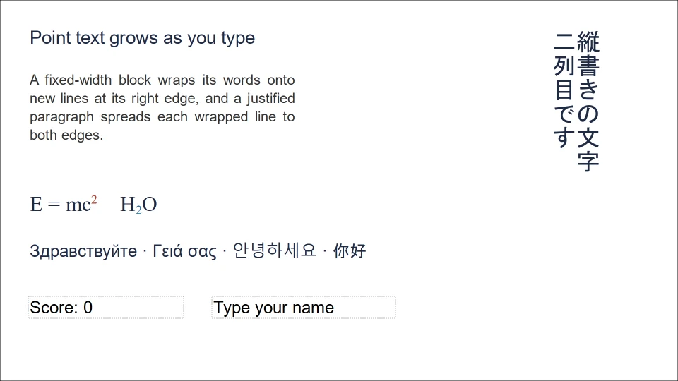
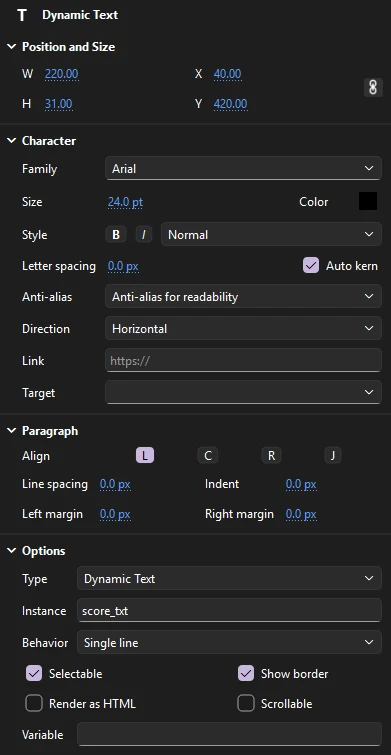
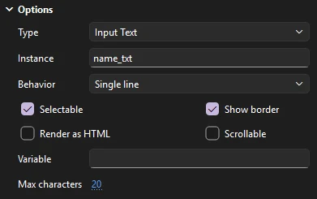
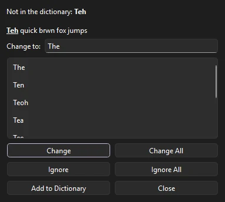
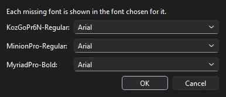

Drawing
Text
Text in Phoenix stays editable: you can retype it, restyle parts of it, and resize its box at any time. A text field can be artwork, a field a script fills in, or a box the viewer types into.

Add text
Press T for the Text tool, then:
- Click to start a box that grows as you type. Press Enter for a new line.
- Drag to make a box of a fixed width. Text wraps onto new lines at its right edge.
To finish, press Esc, click elsewhere, or pick another tool. Each editing session is one step to undo. If you delete all the text in a box, the box is removed.

New text takes the Tool tab's Family, Size and Text type and the toolbar's fill color. Everything else starts at its default, and you change it on the Object tab once the text is there.
Text copied from another app and pasted onto the stage (not into a box you are editing) becomes a new static text box that grows to fit, in Arial at 20 points. Each line of the pasted text is a line of the box.
Box width
Phoenix has two kinds of text box:
- Growing (point) text
- Made by a click. The box widens as you type and only starts a new line where you press Enter. Good for titles, labels and single words.
- Fixed-width text
- Made by a drag. Words wrap at the box's right edge and the box grows downward. Good for paragraphs and captions.
While you edit, a text box shows a small handle at its top right corner: round on a growing box, square on a fixed-width one. To switch between them:
- Drag the round handle to give a growing box a width. It becomes fixed-width and its text wraps.
- Drag a square handle to change the width of a fixed-width box.
- Double-click a square handle to let the box grow with its text again.
Edit text
Click existing text with the Text tool to place the caret in it. That works on text that has been rotated, scaled or skewed too. The Selection tool doesn't edit the words: double-clicking text with it does nothing, so switch to the Text tool first.
| Key or action | Does |
|---|---|
| ← → | Move the caret |
| Home End | Move the caret to the start or end of the text |
| ↑ ↓ | Move the caret to the line above or below |
| Ctrl+← Ctrl+→ | Move a word at a time |
| Shift with those keys | Extend the selection |
| Drag across text | Select a range |
| Shift+click | Extend the selection to where you click |
| Double-click a word | Select the word |
| Ctrl+A | Select all the text in the box |
| Backspace Delete | Delete characters or the selection |
| Ctrl+C Ctrl+X Ctrl+V | Copy, cut and paste characters, to and from other apps too |
| Esc | Finish editing |
Typing replaces the selected text. Changing the font, size or fill color while text is selected restyles just that part. Tab doesn't type a tab character.
Select, move and transform text fields
With the Selection tool, click a text field to select it as a whole, and Shift+click to add more. Drag to move it, or nudge it with the arrow keys. The Free Transform tool rotates, scales, skews and flips text fields like any other object, and the text stays editable. Scaling a field this way makes it bigger on the stage without changing its Size setting.
The Object tab's Position and Size shows where the field is and how big it is.
Character and paragraph settings
Select a text box with the Selection tool, or click into one with the Text tool, and the Object tab of the Properties panel shows its settings. With the Selection tool a change applies to the whole box, or to every text box selected (the panel's title then says how many). While typing, character settings apply to the selected characters and paragraph settings to the paragraphs the selection or caret is in. The panel's title says (typing) while it shows the settings at the caret.

Character settings belong to characters, so one field can mix fonts, sizes and colors.
Paragraph settings belong to whole paragraphs: everything between two returns.
Options belong to the field: its type, and what a dynamic or input field does where the movie plays.
Character
- Family
- The font, from the fonts installed on your computer.
- Size
- The size in points, from 1 to 500. A point is a pixel on the stage at 100%.
- Color
- Click the swatch to pick the text color, with its alpha. Text takes one solid color per character. For a gradient, break the text apart into shapes first (see Break text apart).
- Style
- B and I for bold and italic. When the font has no bold or italic face, Phoenix draws it bolder or slanted. The list beside them sets Normal, Superscript or Subscript: smaller characters set above or below the line, as in m² or H₂O.
- Letter spacing
- Room added between letters, in pixels, from -60 to 60. Negative values pull letters together. Select a range to space just those letters, or a whole field to track all of it.
- Auto kern
- Uses the font's own kerning pairs, so letters like A and V tuck together. On by default.
- Anti-alias
- How the text should be smoothed where the movie plays: Use device fonts, Bitmap text (no anti-alias), Anti-alias for animation, Anti-alias for readability or Custom anti-alias. The setting is saved with the field for players that use it. The stage and Phoenix's own exports draw text smoothed whatever it says, and custom anti-aliasing has no thickness or sharpness settings in Phoenix.
- Direction
- Horizontal or vertical. See Vertical text.
- Link, Target
- A web address the characters open when clicked where the movie plays, and the window it opens in:
_blank(a new window),_self,_parent,_top, or a window name you type. Amailto:address works too. Input text has no links.
Paragraph
- Align
- L, C, R and J: left, center, right or justified. A justified paragraph spreads each wrapped line to both edges; its last line stays to the left. Alignment shows best in a fixed-width box, where there are edges to align to.
- Line spacing
- Room between lines, in pixels, on top of the font's own line height. Negative values pull lines closer.
- Indent
- How far the first line of each paragraph starts in. A negative indent with a left margin makes a hanging indent.
- Left margin, Right margin
- Room kept clear at either side of the box, for every line of the paragraph.
Example: a caption with a styled word
- With the Text tool, drag a box about 300 pixels wide and type a two-line caption.
- Press Ctrl+A, then on the Object tab set Family, Size 18 and Line spacing 4. Click C to center the paragraph.
- Double-click one word to select it, click B, and pick a different Color. Only that word changes.
- Press Esc. With the Selection tool, drag the box where you want it.
The Text menu
The menu applies the same settings to the selected text fields, or to the selected characters while you edit one:
- (Ctrl+Shift+B) and (Ctrl+Shift+I) turn the style on, or off when the text already has it.
- (Ctrl+Shift+L), (Ctrl+Shift+C), (Ctrl+Shift+R) and (Ctrl+Shift+J), for whole paragraphs.
Font, size, letter spacing and the rest are set on the Object tab; the Text menu has no items for them.
Vertical text
Set Direction to Vertical and the characters stand upright one under another, in columns that run from right to left, as Chinese, Japanese and Korean are often set. Vertical, left to right puts the first column at the left instead. Direction belongs to the whole field.
- A return starts a new column.
- In a growing box the columns are as tall as their text. In a fixed-size box, a column that reaches the box's foot carries on in the next column.
- Each character takes a cell as tall as its font. Line spacing, letter spacing and alignment don't change vertical text yet.
Letter animators work on vertical text, and Text on a Path runs it along a motion guide (see Letter animators).
Text types
Every text field has a type. It matters when your document will play in Test Movie, as a published page or SWF movie, or in a player or game engine that plays FLA or SWF content:
- Static Text
- Fixed text that is part of the artwork. Use this for anything that is just meant to be seen: titles, captions, signs in a background.
- Dynamic Text
- Text a script can change while the content runs, such as a score, a timer or a name. Templates also use dynamic text with an instance name as a field each instance can fill in (see Templates).
- Input Text
- A field the viewer can type into, such as a name or an answer.
Choose the type for new text with Text type on the Tool tab. To change an existing field, select it and choose Type under Options on the Object tab. Selecting several fields changes them all as one step. Dynamic and input text show a dotted outline on the stage, so you can see their boxes when they are empty.
Dynamic and input options
For dynamic and input text, Options on the Object tab set what the field does where it plays:
- Instance
- The name scripts reach the field by, such as
score_txt. See ActionScript and Test Movie. - Behavior
- Single line keeps the text on one line. Multiline wraps it at the box's edge. Multiline no wrap breaks lines only at returns. Input text adds Password, which shows each typed character as an asterisk.
- Selectable
- The viewer can select and copy the text. On by default.
- Show border
- A box drawn around the field where it plays.
- Render as HTML
- Text set from a script may carry HTML tags, such as
<b>and<font>, which style it. - Scrollable
- The field keeps its size and its text scrolls. This is saved with the field for players that use it.
- Variable
- An ActionScript 1 or 2 variable the field shows. The field updates as the variable changes, and typing into an input field sets it.
- Max characters
- For input text, how many characters the viewer can type. No limit (0) is the default.

Example: a score that a script updates
- Set Text type to Dynamic Text on the Tool tab, then drag a box and type
Score: 0. - Press Esc. Under Options, type
score_txtin Instance. - In a frame script, set its text, for example
score_txt.text = "Score: " + score;in ActionScript 3, orthis.score_txt.text = "Score: " + score;in an HTML5 Canvas document. - Choose (Ctrl+Enter) to see it change. Click an input field there to type into it.
Example: a name field
- Set Text type to Input Text, and drag a box as wide as the longest name you expect.
- Under Options, name it
name_txt, set Behavior to Single line, tick Show border, and set Max characters to 20. - Scripts read what the viewer typed from
name_txt.text.
Text in other languages
Text fields hold Unicode, so one field can mix Latin, Cyrillic, Greek, Chinese, Japanese, Korean and other scripts, as long as the font you choose (or the fonts your computer substitutes) has the characters.
To type in Chinese, Japanese, Korean or another language that uses an input method, switch to it as usual: the characters being composed show underlined at the caret, with the input method's candidates beside them, and go into the text when you choose them. You can also paste text in any language from another app.
For text set top to bottom, use vertical text. Phoenix has no right-to-left paragraph direction for Arabic or Hebrew.
Animate text
A text field can be tweened like any other object: move, rotate, scale and fade it with a classic or motion tween. To animate the letters one by one while the words stay editable (typewriter, cascade, wave, scramble, text on a path and more), add letter animators in the Behaviors panel. See Letter animators and the animated title lesson.
Break text apart
Select a text box and choose (Ctrl+B) to split it into one box for each letter, each standing where it stood. Spaces are dropped. The letters are still text, so you can put each on its own layer and animate it.
Break a single letter apart again to turn it into filled shapes in its color, which you can then reshape, fill with a gradient, or erase like any other drawing. The letters are no longer text after that, so you can't retype them. To turn a whole word into shapes, break it apart twice: once into letters, then again with all the letters selected.
Font symbols
A font symbol is a library item that names a font and the characters of it to embed: uppercase, lowercase, numerals, punctuation, basic Latin, and any others you type. Text set in it stays tied to the symbol, so you can change the font for all of that text in one place.
- Right-click the Library panel and choose New Font....
- Give it a name, pick the font and its Bold or Italic style, tick the character ranges to embed, and type any other characters in Also.
- Select text, then right-click the font symbol and choose Use for Selected Text.
Font Properties... changes it later; renaming it keeps the text set in it. Deleting it sets that text in the font itself. See Font symbols.
Phoenix keeps font symbols in FLA and XFL files. The SWF movies Phoenix exports name each text field's font for the player to find on the viewer's computer rather than embedding its outlines; static text goes into them as shapes, so it looks the same everywhere.
Check spelling

goes through every text box in every scene and symbol, one word not in the dictionary at a time, showing it in its sentence with suggestions. Pick a suggestion or type in Change to.
Change fixes this one, Change All every one in the document; Ignore skips it, Ignore All skips it everywhere, and Add to Dictionary keeps it as a word from now on. When it's done, Phoenix says how many changes it made. Each change can be undone.
Phoenix uses the Windows spell checker and its dictionary, in the language Phoenix runs in (or US English when there is no dictionary for it). On other systems, Check Spelling says that no spell checker is available.
Find and replace text
(Ctrl+F) searches every text box of the document:
- Text finds words, with Match case and Whole word, and replaces them.
- Font finds every use of a font the document uses and can set all of it in an installed font instead.
- Color finds a color in text as well as in fills and strokes.
Find All lists where each one is; click one to go there. Replace All changes them all as one step. See Find and Replace.
Missing fonts
When a document you open uses fonts that are not installed on your computer, Phoenix lists them and asks which installed font to show each one in. The document keeps the fonts it names, so it looks right again on a computer that has them. Your choices apply to every document that uses those fonts, and Phoenix only asks again about fonts it hasn't seen before. Change them under .

Text set in a font symbol isn't listed: it belongs to the library. To change a document's fonts for good rather than just how they show, use Find and Replace with Font.
How text is drawn
Phoenix draws the text settings saved in FLA files, including alignment, letter and line spacing, indents and margins, kerning, superscript and subscript, vertical text, and bold and italic. All text settings are kept when you save, even those that cannot yet be changed in Phoenix.
TLF text in older FLA and XFL files opens as classic text you can edit: its paragraphs and line breaks, and each span's font, size, color, bold, italic and tracking, with each paragraph's alignment. A TLF field with an instance name becomes dynamic text, so scripts can still reach it; the rest becomes static text. A TLF field Phoenix cannot read is kept as it was and saved back unchanged.
When you export, static text stays real text in published HTML5 pages, vectors in SVG, and shapes in SWF movies; dynamic text with an instance name and input text stay fields scripts can reach. See Exporting and publishing.
Right-to-left paragraphs, web fonts, embedding font outlines in a single field or in exported SWF movies, and anti-aliasing that changes how the stage draws text.